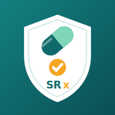

For healthcare professionals only. This app supports, and never replaces, clinical judgement. Always verify against your local antibiogram and current guidelines. Do not enter patient names or identifiers.